Constructing swept synchronous features
You can use the Swept Protrusion, Swept Cutout, and Swept Surface commands to create swept features.
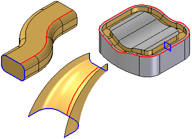
Swept features are constructed by extruding one or more cross sections (A) along one or more path curves (B).
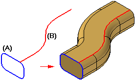
You can define the paths and cross sections by:
-
Selecting elements from an existing sketch
-
Selecting edges on the model or a construction body
-
Selecting derived elements, such as intersection curves and derived curves.
Using sketches
The ability to define paths and cross sections using sketches is especially useful when working with swept features and lofted features. Drawing sketches first allows you to draw the wireframe geometry without constructing the feature. This approach also allows you to experiment with both swept and lofted features using the same sketch geometry.
You can also define relationships between sketches on different planes. For example, you may need to use connect relationships (A) between path and cross section keypoints.
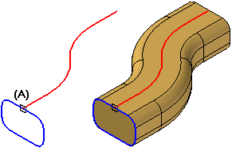
You can also use the Project to Sketch command to copy part edges into sketch, and then use the sketch in a swept feature.
Using part edges and derived elements
You can use edges of existing surface and solid geometry to define path curves or cross sections. You can also use derived elements, such as intersection curves, contour curves, cross curves, and wrapped curves, to define path curves or cross sections.
Path curves
You can define up to three path curves. You can define open or closed path curves. When constructing swept features with more than one path curve, select the elements for the first path curve, and then click the Accept button. Repeat this process for the second path curve. When constructing a swept feature using three paths, after you define the third path, the command automatically proceeds to the cross section step.
When using more than one path or cross section, each path curve must be a continuous set of tangent elements or edges. For example, if you define a path curve using a sketch, the elements must be tangent at their connect points (A).
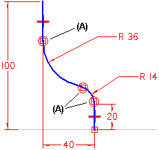
The path curve does not have to be tangent for a swept protrusion constructed with a single path and a single cross section.
When using more than one path curve, the order in which you select the path curves can affect the shape of the feature. A swept feature is allowed to deviate from the first path curve you select. The swept feature typically will not deviate from subsequent path curves. Because of this, you can change the shape of a swept feature by changing the order that you select the path curves. Path selection order can also determine whether the feature is constructed successfully, or fails to recompute properly.
In some cases, you also may want to consider constructing a loft or BlueSurf feature instead of a swept feature. For more information, see the section, Comparing swept, lofted, and BlueSurf features.
Cross sections
For swept protrusions and cutouts, the cross sections must be closed elements that can be planar or non-planar and you can place them anywhere along the path. For swept surfaces, the cross sections can be open or closed.
The cross sections must intersect the paths. If the cross section is a non-periodic element, you also must define its start point (A). Position the cursor near the vertex that you want to use as the start point, and then click.
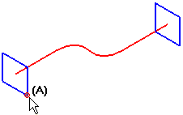
You do not have to define the start point for a cross section that is a periodic element.
When working with swept features that have multiple cross sections, you must select the start point for all non-periodic cross sections.
Defining appropriate start points allows you to prevent or control twisting. For example, different results are obtained when you define the starts points as (A) to (A) or (A) to (B). In some cases, mismatched start points can result in failed features.
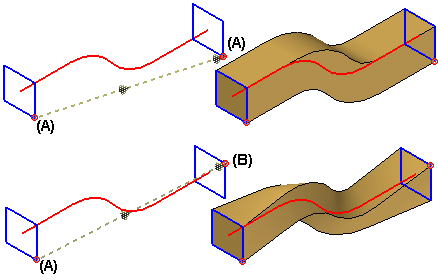
Cross section sequence
When constructing swept features with multiple cross sections, each cross section you define adds an entry to the Cross Section Order dialog box.
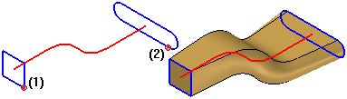
When you add new cross sections, the system adds them after the existing cross sections, regardless of their physical orientation with respect to the path curve and existing cross sections.
When you modify an existing swept feature by adding new cross sections, you can use the Cross Section Order dialog box to define the cross section sequence to be used when the feature is constructed. For example, you can specify that the feature is constructed using cross section (1) first, then cross section (3), and finally cross section (2).
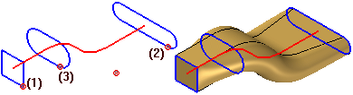
Clamp conditions
You can control clamp conditions, the shape of the swept feature where the swept features meet between multiple cross sections, with the Clamp Control Handle.
The handle has two options:
|
No Clamp |
Specifies that no constraining condition is enforces on the cross section. |
|
|
Clamp to Section |
Specifies that the cross section is maintained for a length controlled by its magnitude handle. |
|


Sweep Options dialog box
For new swept features constructed in version 18 or later, you can use the Sweep Options dialog box to set options that give you additional control over the shape of the feature. You can use the dialog box to set options that control section alignment with respect to the path curve, face merging, and face continuity.
-
Section alignment
The section alignment options allow you to control how the faces defined by cross section curves are oriented with respect to the path curves. Depending on the input curves, some options may provide better results. If one option does not give you the result you want, experiment with the other options.
For example, using the same input sketches, different results are achieved by changing the Section Alignment option from Normal (A) to Parallel (B). In this example, the bottom path curve P1 was selected first. Notice that the feature deviates from the path curve when using the Normal option with this set of sketches, but does not deviate from the path curve when using the Parallel option.
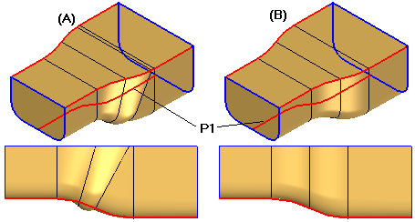
-
Face merging
The face merging options allow you to specify whether or not faces on the feature are merged. Specifies the face merging option you want. You can specify that faces are not merged (A), fully merged (B), or merged only along the path (C). This can be seen more easily if Part Painter is used to change the surface color.
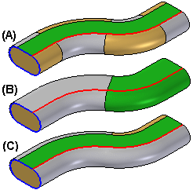
If you change the face merging options on a swept feature after downstream features that depend on the original faces are constructed, the downstream features may not recompute properly.
-
Face continuity
The face continuity options allow you to specify the degree of continuity between adjacent segments within a swept feature.
Defining a locking axis
When you construct swept features with a non-planar path and one or more cross sections you can define a locking axis for the cross section profile during the Axis Step. A locking axis allows you to control twist in a swept feature.
When you select a locking axis (A), the cross section profile and resultant surfaces maintain a fixed relationship with the plane that is normal to the locking axis direction, which is constant (B). With no locking axis specified, the cross section profile and resultant surfaces maintain a fixed relationship with the plane normal to the path, which varies (C). In this example, you could also use the vertical line (D) in the cross section profile to define the locking axis.
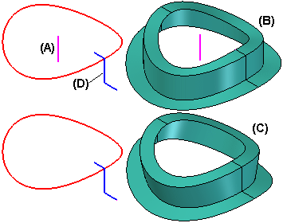
The path cannot be parallel to the lock axis at any point.
Comparing swept, lofted, and BlueSurf features
When working with models that require complex or free-form geometry, such as those with multiple paths and cross sections, you may want to experiment with swept, lofted, and BlueSurf features, and compare the results. Depending on the input geometry and options you set, one feature type may you give more desirable results than the other. The following outlines the major differences between these features.
-
Swept features must always have at least one, but not more than three path curves. They can have one or more cross sections.
-
Lofted features must have at least two cross sections. They can have no guide curves, or one or more guide curves.
-
BlueSurf features must have at least one guide curve and one cross section, or at least two cross sections and no guide curves. You can also create new guide curves and cross sections dynamically within the command by intersecting a BlueSurf feature with a plane.
For more information, see the Constructing Lofted Features Help topic.
How do I
Construct a swept protrusion or cutoutLearn more
Comparing swept, lofted, and BlueSurf featuresCross sections
Defining a locking axis
Path Curves
Using Sketches
Look up more details
Swept Protrusion commandSwept Protrusion command bar
Sweep Options dialog box
Tips for path and cross section creation